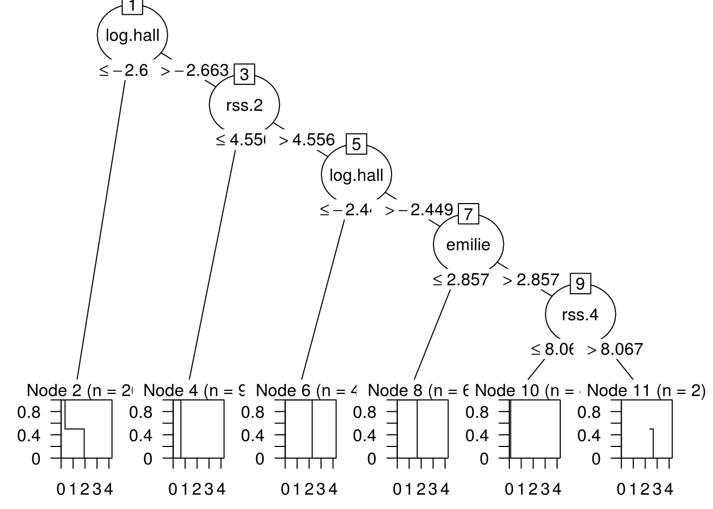

To implement a (slow) regression tree for interval censored output data, using the survival::survreg function, which can be used to fit a linear model for censored outputs. Then search for the best possible split over all features by maximizing the logLik of the survreg model.
## Loading required package: grid## Loading required package: libcoin## Loading required package: mvtnormFunction get_split splits and checks for the best split by maximizing the loglik of survreg model. We surf through all possible splits by using 2 nested loops on rows and columns. Split and every point and check if that is the maximum or not.
As this process takes a lot of time, as it has a Time complexity of O(2^n) Hence its known as Slow Regression.
##########################split index##############################################
get_split <- function(y, dataset,i,min_size){
#split object gives info about the best split
split<-NULL
split$log<- -Inf
split$group$right<-NULL
split$group$left<-NULL
split$index <- 0
split$row <-0
split$br <- 0
for (index in 1:(length(dataset[0,]))){ #4
if(i!=index){
#the formula used in survreg for fitting
form <-as.formula(paste(y,
paste(names(dataset[index]),
collapse="+"),collapse = "+"))
for (row in 1:length(dataset[,index])){ #150
br<-dataset[row,index]
group <- test_split(dataset, index, br)
ctrl<-survreg.control(maxiter=60, rel.tolerance=1e-06,toler.chol=1e-7)
if((length(group$left)>min_size)&&(length(group$right)>min_size))
{
#fitting left and right part of split and summing their loglikelihood
fitl <- survreg(form, dataset[group$left,] ,dist = "t",control = ctrl)
l<-logLik(fitl)
fitr <- survreg(form, dataset[group$right,] ,dist = "t",control = ctrl)
r<-logLik(fitr)
log<- l+r
#checking condition if loglikelihood is Inf or Nan or 0
#then it should be excluded.
if(is.nan(log)||is.nan(r)||is.nan(l)||(log==0)){
log<--Inf
}
#maximizing the loglikelihood
if (split$log < as.numeric(log)){
split$index <- index
split$row <-row
split$br <- br
split$log <- log
split$group<-group
}
}
}
}
}
return(split)
}This function splits the dataset into 2 parts : left and right by checking if value is lesser or higher. For lesser value than break point, the datapoint goes to left side and vise-versa.
####################right-left split#################################
test_split <- function(dataset, index, value){
left <- c()
right <- c()
for (row in 1:length(dataset[,2])){
if (as.numeric(dataset[row,index]) < value){
left <- cbind(left,row)
}
else{
right <- cbind(right,row)
}
}
group <-c()
group$left <- left
group$right <- right
return (group)
}The split function splits the dataset according to the best split point we get from get_split. We use depth first search to split the tree and make a binary tree out of it.
Note: Here we consider only numerical columns for splitting.
############################3tree######################################
# Create child splits for a node or make terminal
split <- function(y,sp, depth, maxdepth,min_size,i,dataset,b_index){
rsize<- length(sp$group$right)
lsize<- length(sp$group$left)
#b_index
l<- length(b_index[,1])
id <- as.numeric(b_index[l,1])+1
term <- 0
varid<-0
kidi<-0
kidf<-0
br<-0
info <- ''
tag<-'no'
# check for a no split
if (!((any(sp$group$left))&&(any(sp$group$right)))){
return(b_index)
}
#splitting into right
tag<-'right'
#print("right")
#new splitiing object
spn<- get_split(y,dataset[sp$group$right,],i,min_size)
#if its a terminal
if((spn$log==-Inf)||(spn$log==0)||(as.numeric(depth)>as.numeric(maxdepth))
||(as.numeric(rsize)<as.numeric(min_size))){
term <- 1
sp$group$right <- NULL
node <- c(id,varid,br,term,kidi,kidf,info,tag)
b_index <- rbind(b_index,node)
}
#if we require further right splitting
else{
varid <- spn$index
node <- c(id,varid,spn$br,term,kidi,kidf,info,tag)
b_index <- rbind(b_index,node)
b_index <- split(y,spn,depth+1,maxdepth,
min_size,i,dataset[sp$group$right,],b_index)
}
#b_index
tag<-'left'
#print("left")
l<- length(b_index[,1])
id <- as.numeric(b_index[l,1])+1
term <- 0
varid<-0
br<-0
info <- ''
#splitting into left
spn <- get_split(y,dataset[sp$group$left,],i,min_size)
#terminal
if((spn$log==-Inf)||(spn$log==0)||(as.numeric(depth)>as.numeric(maxdepth))
||(as.numeric(lsize)<as.numeric(min_size))){
term <- 1
sp$group$left <- FALSE
node <- c(id,varid,br,term,kidi,kidf,info,tag)
b_index <- rbind(b_index,node)
}
#splitting further
else{
varid <- spn$index
br<- spn$br
node <- c(id,varid,br,term,kidi,kidf,info,tag)
b_index <- rbind(b_index,node)
gr <- spn$group
b_index <- split(y,gr,depth+1,maxdepth,min_size,i,
dataset[sp$group$left,],b_index)
}
return(b_index)
}We Use the same algo here as in Medium Test.
###############################terminal output############################
kid <- function(b_index){
n<- 0
k<-c()
for(i in 2:(length(b_index[,1]))){
#if tag is right and next tag is left -> put into i-1th b_index
if(b_index[i,8]=="right"){
b_index[i-1,6] = i
if(b_index[i+1,8]=="left"){
b_index[i-1,5] = i+1
}
}
#check of left out left tags
if((b_index[i,8]=="left")&&(b_index[i-2,5]==0)){
k<-c(k,i)
}
}
c<-1
#put k from botton to top
for(i in length(b_index[,1]):1){
if((b_index[i,5]==0)&&(b_index[i,4]==0)&&(b_index[i,6]!=0)){
b_index[i,5]=k[c]
c=c+1
}
}
#If kidi and kidf are 0 and terminal is 0 then make it 1
for(i in 2:length(b_index[,1])){
if((b_index[i,5]==0)&&(b_index[i,5]==0)){
b_index[i,4]=1
}
}
return (b_index)
}We are making list of partysplit objects and creating partynode which is used to create The Tree.
################################cart algo##################################
cart <- function(y,dataset,i,maxdepth,min_size){
b_index <- c(1)
#defining formula and dataset
form <-as.formula(paste(y, "."))
dataset <- model.frame(form, data = dataset)
#root splitting
b <- get_split(y,dataset,i,min_size)
#defininf b_index
b_index <- data.frame(b_index,b$index,b$br,0,0,0,'',
"root",stringsAsFactors=FALSE)
colnames(b_index) <- c("id","varid","break","terminal",
"kidi","kidf","info","tag")
#further splitting
b_index <- split(y,b,1,maxdepth,min_size,i,dataset,b_index)
b_index <- kid(b_index)
print(b_index)
#list of partysplit objects
nodelist <- list(
#root node
list(id = 1L, split = partysplit(varid = as.integer(b_index[1,2]),
breaks = as.numeric(b_index[1,3])),
kids = c(as.integer(b_index[1,5]),as.integer(b_index[1,6]))))
for(i in 2:length(b_index[,1])){
#terminal
if(as.numeric(b_index[i,4])){
nodelist[i] <- list(list(id = as.integer(b_index[i,1]), info = b_index[i,7]))
}
#mid-values
else{
nodelist[i] <- list(
list(id = as.integer(b_index[i,1]), split = partysplit(
varid = as.integer(b_index[i,2]),
breaks = as.numeric(b_index[i,3])),
kids = c(as.integer(b_index[i,5]),as.integer(b_index[i,6])),
info = b_index[i,7]))
}
}
## convert to a recursive structure
node <- as.partynode(nodelist)
## set up party object
tree <- party(node, data = dataset, fitted = data.frame(
"(fitted)" = fitted_node(node, data = dataset),
"(response)" = model.response(dataset),
check.names = FALSE), terms = terms(dataset))
tree <- as.constparty(tree)
return(tree)
}Here is the b_index value and the generated Tree. I am taking 45 datapoints of the neuroblastomaProcessed dataset and 118 features.
## [1] "b_index:"## id varid break terminal kidi kidf info tag
## 1 1 5 -2.66313655853642 0 11 2 root
## 2 2 17 4.55598040940771 0 10 3 right
## 3 3 5 -2.4492307074178 0 9 4 right
## 4 4 6 2.85699394979789 0 8 5 right
## 5 5 19 8.06714763207896 0 7 6 right
## 6 6 0 0 1 0 0 right
## 7 7 0 0 1 0 0 left
## 8 8 32 4.83058229562863 1 0 0 left
## 9 9 0 0 1 0 0 left
## 10 10 2 0.0615741153864324 1 0 0 left
## 11 11 5 -2.9125749505963 1 0 0 left## [1] "The tree:"